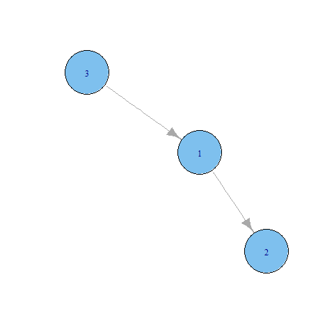
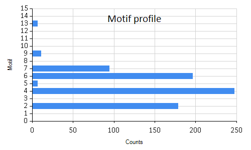
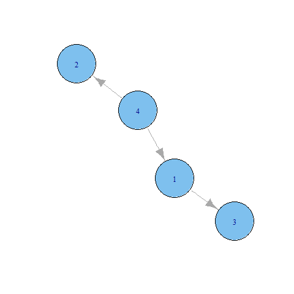

Analysing code dependency networks
This FsLab Journal shows how to analyse code dependency networks from a compiled .NET assembly.
Requirements:
- Mono.Cecil - a library for analysis of compiled .NET assemblies
- R - statistical programming language that I used for motif analysis and for some plotting.
You need to have R installed on your machine, especially to run the motif analysis. Full source code used in this FsLab journal is available from my GitHub page.
Required NuGet packages including Cecil will download when you build this project in Visual Studio.
Extracting dependency network
As an example, we will work with FSharp.Data.dll which is already a part
of this FsLab Journal Project.
1:
|
let projectAssembly = __SOURCE_DIRECTORY__ + @"\packages\FSharp.Data.2.0.8\lib\net40\FSharp.Data.dll" |
First step is to extract dependency network from the assembly. Nodes in this network are formed by top-level classes or modules. Links represent dependencies.
For this, we will
use some functions defined in dependency-network.fs. Code there uses some of
the code from Scott Wlaschin's blog post Cycles and modularity in the wild.
The following function reads dependencies from the assembly and saves the
extracted network in two JSON files, one containing nodes (modules and classes),
second one containing links (dependencies).
1: 2: 3: 4: 5: 6: 7: 8: |
references... #load "type-dependency-graph.fs" #load "dependency-network.fs" let outputDir = __SOURCE_DIRECTORY__ + "\\data\\" let project = "FSharp.Data" DependencyNetwork.generateNetwork project projectAssembly outputDir |
There should now be two files in the data folder:
FSharp.Data.all.nodes.json and FSharp.Data.all.links.json.
We can examine size of the network using JSON type provider
from FSharp.Data.
1: 2: 3: 4: 5: 6: 7: 8: 9: 10: 11: 12: 13: 14: 15: |
open FSharp.Data // JSON type provider - provide samples type Nodes = JsonProvider<"../../data/FSharp.Data.all.nodes.json"> type Links = JsonProvider<"../../data/FSharp.Data.all.links.json"> let networkSize project = let jsonNodes = Nodes.Load(outputDir + project + ".all.nodes.json") let jsonLinks = Links.Load(outputDir + project + ".all.links.json") let nodeCount = jsonNodes.Nodes.Length let linkCount = jsonLinks.Links.Length nodeCount, linkCount let nodeCount, linkCount = networkSize project printfn "Number of nodes: %d, number of links: %d" nodeCount linkCount |
Number of nodes: 94, number of links: 173
This gives us basic size of the network. For further analysis, we will work with the adjacency matrix representation. Adjacency matrix is a binary matrix that has value \(1\) in row \(i\) and column \(j\) if there is \(i \rightarrow j\) link in the original network. If there is no link, the matrix has \(0\) in that position.
1: 2: 3: 4: 5: 6: 7: 8: 9: 10: 11: 12: 13: |
open MathNet.Numerics.LinearAlgebra let getAdjacencyMatrix project = let jsonNodes = Nodes.Load(outputDir + project + ".all.nodes.json") let jsonLinks = Links.Load(outputDir + project + ".all.links.json") // Create adjacency matrix let nodeCount = jsonNodes.Nodes.Length seq { for link in jsonLinks.Links -> link.Source, link.Target, 1.0 } |> SparseMatrix.ofSeqi nodeCount nodeCount let adjacencyMatrix = getAdjacencyMatrix project |
The resulting adjacency matrix is very sparse:
SparseMatrix 94x94-Double 1.96 % Filled
0 0 0 0 1 ... 0
0 0 1 0 0 ... 0
0 0 0 0 1 ... 0
0 0 0 0 1 ... 0
0 0 0 0 0 ... 0
0 0 0 0 0 ... 0
0 0 0 0 0 ... 0
... ... ... ... ... ... ...
0 0 0 0 1 ... 0
Computing basic network statistics
Using adjacency matrix, we can compute several basic network characteristics. For example, how many nodes do not participate in any dependency? These nodes represent standalone modules within the project. In the adjacency matrix, such nodes have only zeros in their corresponding rows and columns because they are not connected to any other node.
1: 2: 3: 4: 5: 6: 7: 8: 9: 10: 11: |
let isolatedNodes (adjacencyMatrix: Matrix<float>) = // number of rows (columns) let n = adjacencyMatrix.RowCount seq { for node in 0..n-1 -> if (adjacencyMatrix.Row(node) |> Seq.sum) = 0.0 && (adjacencyMatrix.Column(node) |> Seq.sum) = 0.0 then 1.0 else 0.0 } |> Seq.sum let isolatedCount = isolatedNodes adjacencyMatrix printfn "Network has %.0f isolated nodes." isolatedCount |
Network has 8 isolated nodes.
File with nodes FSharp.Data.all.nodes.json contains also information
on the size of code in each node. Code size is equal to the number
of CIL instructions in all functions (methods) within a module (class).
We can extract the total size of the project using JSON type provider.
1: 2: 3: 4: 5: 6: 7: |
let getTotalCodeSize project = let jsonNodes = Nodes.Load(outputDir + project + ".all.nodes.json") seq { for node in jsonNodes.Nodes -> node.CodeSize } |> Seq.sum let codeSize = getTotalCodeSize project printfn "Total code size of the project is %d instructions." codeSize |
Total code size of the project is 135001 instructions.
Diameter using R
To compute some more advanced graph statistics, we will turn to R
with RProvider.
To compute network diameter, we will use the igraph package from R.
For this step, you need to have an installation of R on your machine.
To be able to use package igraph, you will have to open an R session
and run the following command:
install.packages("igraph")
Then you need to restart Visual Studio so that RProvider can detect installed packages.
To be able to use the R function for diameters, we need to transform the adjacency matrix into a format that we can pass into R.
1: 2: 3: 4: 5: 6: 7: 8: 9: 10: 11: 12: 13: 14: 15: 16: |
open RProvider open RProvider.``base`` open RProvider.igraph // transform adjacency matrix into igraph adjacency matrix let igraphNetwork (adjacencyMatrix: Matrix<float>) = Array2D.init adjacencyMatrix.RowCount adjacencyMatrix.ColumnCount (fun i j -> adjacencyMatrix.[i,j]) |> R.as_matrix |> R.graph_adjacency let adjacencyMatrixR = igraphNetwork adjacencyMatrix // compute diameter of the network let diameter:float = R.diameter(adjacencyMatrixR).GetValue() printfn "Diameter of the network is %.0f nodes." diameter |
Diameter of the network is 6 nodes.
Graph motifs
Motifs are small subgraphs with defined structure that occur in graphs.
We will again use R package igraph to search for motifs in the project.
The R function graph_motifs can efficiently count motifs on 3 or
4 nodes. As an input we only need to supply the R adjacency matrix.
1: 2: 3: 4: 5: 6: 7: 8: |
let graphMotifs size = if size <> 3 && size <> 4 then failwith "Only motifs of size 3 and 4 are supported." let (motifs: float []) = R.graph_motifs(adjacencyMatrixR, size).GetValue() Array.zip [| 0..motifs.Length-1 |] motifs let motifs3 = graphMotifs 3 printfn "%A" motifs3 |
[|(0, nan); (1, nan); (2, 179.0); (3, nan); (4, 248.0); (5, 7.0); (6, 197.0);
(7, 95.0); (8, 0.0); (9, 11.0); (10, 0.0); (11, 0.0); (12, 0.0); (13, 7.0);
(14, 0.0); (15, 0.0)|]
The function R.graph_motifs returns counts of each possible motif on
3 nodes in the network, ordered by their isomorphism class.
The F# wrapper function graphMotifs returns an array of tupes where the first element
is the isomorphism class of the motif and the second element is the motif count.
Arrangements on 3 nodes that are not connected
are not considered as motifs and the function returns nan for those. There are
16 possible subgraphs on 3 nodes but only 13 of them are valid motifs.
What motif is the most common in FSharp.Data?
1: 2: 3: 4: 5: 6: 7: |
let mostCommonMotif motifCounts = motifCounts |> Array.filter (fun x -> not (Double.IsNaN(snd x))) |> Array.maxBy snd let isoclass, count = mostCommonMotif motifs3 printfn "The most common motif on 3 nodes is motif number %d which occurs %.0f times." isoclass count |
The most common motif on 3 nodes is motif number 4 which occurs 248 times.
The isomprhism class itself does not tell us much about the motif. We can find the corresponding graph by plotting it:
1: 2: 3: 4: 5: 6: 7: 8: 9: 10: |
let plotMotif size isoclass = let isoGraph = R.graph_isocreate(size=size, number=isoclass) namedParams [ "x", box isoGraph; "edge.arrow.width", box 1; "edge.arrow.size", box 1.5; "vertex.size", box 50] |> R.plot_igraph plotMotif 3 isoclass |

The most common motif in the project is a simple chain of three nodes. We can plot the whole motif profile of the project to get an overview of frequencies of all motifs.
1: 2: 3: 4: |
open FSharp.Charting Chart.Bar(motifs3, Title="Motif profile", YTitle="Counts", XTitle="Motif") |> Chart.WithXAxis(Min=0.0,Max=15.0) |

Similarly we can find which motif on 4 nodes is the most common in the project.
1: 2: 3: |
let motifs4 = graphMotifs 4 let isoclass4, count4 = mostCommonMotif motifs4 printfn "The most common motif on 4 nodes is motif number %d which occurs %.0f times." isoclass4 count4 |
The most common motif on 4 nodes is motif number 41 which occurs 591 times.
Again, we plot the motif to find out what graph the isomoprhism class corresponds to.
1:
|
plotMotif 4 isoclass4 |

Full name: AnalyseCodeNetworks.projectAssembly
System.IO.Directory.SetCurrentDirectory(__SOURCE_DIRECTORY__ + "/packages/FSharp.Core/")
#r @"packages\Mono.Cecil.0.9.5.4\lib\net40\Mono.Cecil.dll"
#r @"packages\Mono.Cecil.0.9.5.4\lib\net40\Mono.Cecil.Rocks.dll"
#r @"packages\QuickGraph.3.6.61119.7\lib\net4\QuickGraph.dll"
Full name: AnalyseCodeNetworks.outputDir
Full name: AnalyseCodeNetworks.project
Full name: DependencyNetwork.generateNetwork
Extract dependency network from assembly and save it in JSON format
Full name: AnalyseCodeNetworks.Nodes
Full name: FSharp.Data.JsonProvider
<summary>Typed representation of a JSON document.</summary>
<param name='Sample'>Location of a JSON sample file or a string containing a sample JSON document.</param>
<param name='SampleIsList'>If true, sample should be a list of individual samples for the inference.</param>
<param name='RootName'>The name to be used to the root type. Defaults to `Root`.</param>
<param name='Culture'>The culture used for parsing numbers and dates.</param>
<param name='ResolutionFolder'>A directory that is used when resolving relative file references (at design time and in hosted execution).</param>
<param name='EmbeddedResource'>When specified, the type provider first attempts to load the sample from the specified resource
(e.g. 'MyCompany.MyAssembly, resource_name.json'). This is useful when exposing types generated by the type provider.</param>
Full name: AnalyseCodeNetworks.Links
Full name: AnalyseCodeNetworks.networkSize
Full name: AnalyseCodeNetworks.nodeCount
Full name: AnalyseCodeNetworks.linkCount
Full name: Microsoft.FSharp.Core.ExtraTopLevelOperators.printfn
Full name: AnalyseCodeNetworks.getAdjacencyMatrix
val seq : sequence:seq<'T> -> seq<'T>
Full name: Microsoft.FSharp.Core.Operators.seq
--------------------
type seq<'T> = Collections.Generic.IEnumerable<'T>
Full name: Microsoft.FSharp.Collections.seq<_>
from MathNet.Numerics.LinearAlgebra
Full name: MathNet.Numerics.LinearAlgebra.SparseMatrix.ofSeqi
Full name: AnalyseCodeNetworks.adjacencyMatrix
Full name: AnalyseCodeNetworks.isolatedNodes
member Add : scalar:'T -> Matrix<'T> + 3 overloads
member Append : right:Matrix<'T> -> Matrix<'T> + 1 overload
member At : row:int * column:int -> 'T + 1 overload
member Cholesky : unit -> Cholesky<'T>
member Clear : unit -> unit
member ClearColumn : columnIndex:int -> unit
member ClearRow : rowIndex:int -> unit
member ClearSubMatrix : rowIndex:int * rowCount:int * columnIndex:int * columnCount:int -> unit
member Clone : unit -> Matrix<'T>
member Column : index:int -> Vector<'T> + 3 overloads
...
Full name: MathNet.Numerics.LinearAlgebra.Matrix<_>
val float : value:'T -> float (requires member op_Explicit)
Full name: Microsoft.FSharp.Core.Operators.float
--------------------
type float = Double
Full name: Microsoft.FSharp.Core.float
--------------------
type float<'Measure> = float
Full name: Microsoft.FSharp.Core.float<_>
Matrix.Row(index: int, result: Vector<float>) : unit
Matrix.Row(rowIndex: int, columnIndex: int, length: int) : Vector<float>
Matrix.Row(rowIndex: int, columnIndex: int, length: int, result: Vector<float>) : unit
from Microsoft.FSharp.Collections
Full name: Microsoft.FSharp.Collections.Seq.sum
Matrix.Column(index: int, result: Vector<float>) : unit
Matrix.Column(columnIndex: int, rowIndex: int, length: int) : Vector<float>
Matrix.Column(columnIndex: int, rowIndex: int, length: int, result: Vector<float>) : unit
Full name: AnalyseCodeNetworks.isolatedCount
Full name: AnalyseCodeNetworks.getTotalCodeSize
Full name: AnalyseCodeNetworks.codeSize
Full name: AnalyseCodeNetworks.igraphNetwork
from Microsoft.FSharp.Collections
Full name: Microsoft.FSharp.Collections.Array2D.init
static member ! : ?paramArray: obj [] -> SymbolicExpression + 1 overload
static member != : ?paramArray: obj [] -> SymbolicExpression + 1 overload
static member !_hexmode : ?a: obj -> SymbolicExpression + 1 overload
static member !_octmode : ?a: obj -> SymbolicExpression + 1 overload
static member $ : ?paramArray: obj [] -> SymbolicExpression + 1 overload
static member $<- : ?paramArray: obj [] -> SymbolicExpression + 1 overload
static member $<-_data_frame : ?x: obj * ?name: obj * ?value: obj -> SymbolicExpression + 1 overload
static member $_DLLInfo : ?x: obj * ?name: obj -> SymbolicExpression + 1 overload
static member $_data_frame : ?x: obj * ?name: obj -> SymbolicExpression + 1 overload
static member $_package__version : ?x: obj * ?name: obj -> SymbolicExpression + 1 overload
...
Full name: RProvider.base.R
Base R functions
R.as_matrix(?x: obj, ?___: obj, ?paramArray: obj []) : RDotNet.SymbolicExpression
No documentation available
static member $<-_igraph_es : ?x: obj * ?name: obj * ?value: obj -> SymbolicExpression + 1 overload
static member $<-_igraph_vs : ?x: obj * ?name: obj * ?value: obj -> SymbolicExpression + 1 overload
static member $_igraph_es : ?x: obj * ?name: obj -> SymbolicExpression + 1 overload
static member $_igraph_vs : ?x: obj * ?name: obj -> SymbolicExpression + 1 overload
static member %--% : ?f: obj * ?t: obj -> SymbolicExpression + 1 overload
static member %->% : ?f: obj * ?t: obj -> SymbolicExpression + 1 overload
static member %<-% : ?t: obj * ?value: obj -> SymbolicExpression + 1 overload
static member %c% : ?x: obj * ?y: obj -> SymbolicExpression + 1 overload
static member %du% : ?x: obj * ?y: obj -> SymbolicExpression + 1 overload
static member %m% : ?x: obj * ?y: obj -> SymbolicExpression + 1 overload
...
Full name: RProvider.igraph.R
Routines for simple graphs and network analysis. igraph can
handle large graphs very well and provides functions for generating random
and regular graphs, graph visualization, centrality indices and much more.
R.graph_adjacency(?adjmatrix: obj, ?mode: obj, ?weighted: obj, ?diag: obj, ?add_colnames: obj, ?add_rownames: obj) : RDotNet.SymbolicExpression
Create graphs from adjacency matrices
Full name: AnalyseCodeNetworks.adjacencyMatrixR
Full name: AnalyseCodeNetworks.diameter
R.diameter(?graph: obj, ?directed: obj, ?unconnected: obj, ?weights: obj) : RDotNet.SymbolicExpression
Diameter of a graph
Full name: AnalyseCodeNetworks.graphMotifs
Full name: Microsoft.FSharp.Core.Operators.failwith
R.graph_motifs(?graph: obj, ?size: obj, ?cut_prob: obj) : RDotNet.SymbolicExpression
No documentation available
member Clone : unit -> obj
member CopyTo : array:Array * index:int -> unit + 1 overload
member GetEnumerator : unit -> IEnumerator
member GetLength : dimension:int -> int
member GetLongLength : dimension:int -> int64
member GetLowerBound : dimension:int -> int
member GetUpperBound : dimension:int -> int
member GetValue : params indices:int[] -> obj + 7 overloads
member Initialize : unit -> unit
member IsFixedSize : bool
...
Full name: System.Array
Full name: Microsoft.FSharp.Collections.Array.zip
Full name: AnalyseCodeNetworks.motifs3
Full name: AnalyseCodeNetworks.mostCommonMotif
Full name: Microsoft.FSharp.Collections.Array.filter
Full name: Microsoft.FSharp.Core.Operators.not
struct
member CompareTo : value:obj -> int + 1 overload
member Equals : obj:obj -> bool + 1 overload
member GetHashCode : unit -> int
member GetTypeCode : unit -> TypeCode
member ToString : unit -> string + 3 overloads
static val MinValue : float
static val MaxValue : float
static val Epsilon : float
static val NegativeInfinity : float
static val PositiveInfinity : float
...
end
Full name: System.Double
Full name: Microsoft.FSharp.Core.Operators.snd
Full name: Microsoft.FSharp.Collections.Array.maxBy
Full name: AnalyseCodeNetworks.isoclass
Full name: AnalyseCodeNetworks.count
Full name: AnalyseCodeNetworks.plotMotif
R.graph_isocreate(?size: obj, ?number: obj, ?directed: obj) : RDotNet.SymbolicExpression
No documentation available
Full name: RProvider.Helpers.namedParams
Full name: Microsoft.FSharp.Core.Operators.box
R.plot_igraph(?x: obj, ?axes: obj, ?add: obj, ?xlim: obj, ?ylim: obj, ?mark_groups: obj, ?mark_shape: obj, ?mark_col: obj, ?mark_border: obj, ?mark_expand: obj, ?___: obj, ?paramArray: obj []) : RDotNet.SymbolicExpression
Plotting of graphs
static member Area : data:seq<#value> * ?Name:string * ?Title:string * ?Labels:#seq<string> * ?Color:Color * ?XTitle:string * ?YTitle:string -> GenericChart
static member Area : data:seq<#key * #value> * ?Name:string * ?Title:string * ?Labels:#seq<string> * ?Color:Color * ?XTitle:string * ?YTitle:string -> GenericChart
static member Bar : data:seq<#value> * ?Name:string * ?Title:string * ?Labels:#seq<string> * ?Color:Color * ?XTitle:string * ?YTitle:string -> GenericChart
static member Bar : data:seq<#key * #value> * ?Name:string * ?Title:string * ?Labels:#seq<string> * ?Color:Color * ?XTitle:string * ?YTitle:string -> GenericChart
static member BoxPlotFromData : data:seq<#key * #seq<'a2>> * ?Name:string * ?Title:string * ?Color:Color * ?XTitle:string * ?YTitle:string * ?Percentile:int * ?ShowAverage:bool * ?ShowMedian:bool * ?ShowUnusualValues:bool * ?WhiskerPercentile:int -> GenericChart (requires 'a2 :> value)
static member BoxPlotFromStatistics : data:seq<#key * #value * #value * #value * #value * #value * #value> * ?Name:string * ?Title:string * ?Labels:#seq<string> * ?Color:Color * ?XTitle:string * ?YTitle:string * ?Percentile:int * ?ShowAverage:bool * ?ShowMedian:bool * ?ShowUnusualValues:bool * ?WhiskerPercentile:int -> GenericChart
static member Bubble : data:seq<#value * #value> * ?Name:string * ?Title:string * ?Labels:#seq<string> * ?Color:Color * ?XTitle:string * ?YTitle:string * ?BubbleMaxSize:int * ?BubbleMinSize:int * ?BubbleScaleMax:float * ?BubbleScaleMin:float * ?UseSizeForLabel:bool -> GenericChart
static member Bubble : data:seq<#key * #value * #value> * ?Name:string * ?Title:string * ?Labels:#seq<string> * ?Color:Color * ?XTitle:string * ?YTitle:string * ?BubbleMaxSize:int * ?BubbleMinSize:int * ?BubbleScaleMax:float * ?BubbleScaleMin:float * ?UseSizeForLabel:bool -> GenericChart
static member Candlestick : data:seq<#value * #value * #value * #value> * ?Name:string * ?Title:string * ?Labels:#seq<string> * ?Color:Color * ?XTitle:string * ?YTitle:string -> CandlestickChart
static member Candlestick : data:seq<#key * #value * #value * #value * #value> * ?Name:string * ?Title:string * ?Labels:#seq<string> * ?Color:Color * ?XTitle:string * ?YTitle:string -> CandlestickChart
...
Full name: FSharp.Charting.Chart
static member Chart.Bar : data:seq<#value> * ?Name:string * ?Title:string * ?Labels:#seq<string> * ?Color:Drawing.Color * ?XTitle:string * ?YTitle:string -> ChartTypes.GenericChart
static member Chart.Bar : data:seq<#key * #value> * ?Name:string * ?Title:string * ?Labels:#seq<string> * ?Color:Drawing.Color * ?XTitle:string * ?YTitle:string -> ChartTypes.GenericChart
Full name: AnalyseCodeNetworks.motifs4
Full name: AnalyseCodeNetworks.isoclass4
Full name: AnalyseCodeNetworks.count4